A world where volunteering is simple and social
First thing's first, if you want to jump right into the prototype you can check it out here.
In the spring of 2019, I was meeting several new people, and most of them seemed fascinated with my background in volunteer work. After going over my experience and hearing about my passion towards it, almost everyone I spoke with said the same thing:“I’ve always wanted to volunteer, but it always seems so hard to get started.”
Hearing that so many people had missed out on opportunities to volunteer was concerning. Could it really be that hard? What kinds of barriers were there? I decided to dig deeper into this phenomenon.
Research & Discovery
To gather more insights, I interviewed 5 people about their experiences with volunteering and, more importantly, about their desire to volunteer - I wanted to truly understand the motivations behind why people volunteer.
Four Major Findings
“You can see the impact on others and on yourself - it’s very heartwarming to see how small gestures impact someone else’s life.”Marielle Fontaine, Interview Participant
Of the four major findings, the one that stood out the most was that there were signifigant barriers to entry. Users mentioned that the processes were long and out of date, and in some cases, phone calls or emails were never even returned. One user even said they had to print off and mail in their application form and that alone stopped them from proceeding.
Users also mentioned that they struggled to find an organization they wanted to volunteer. There are lots of choices out there, and most users didn’t even know where to start.
Volunteering has massive social and global impact. If people who would otherwise be volunteering aren’t because they’ve given up on the process before even beginning the process, this could be an incredible opportunity for true design intervention.
How might we connect potential volunteers with organizations they identify with, and inspire them to successfully complete the application process?
Persona Development
My next step was to develop my understanding of the user even further by building out a persona. This would allow me to not only connect with my user in a much more meaningful way, but giving a face and name to the user allowed me to really start to build upon the humanity and empathy required for a successful solution.
Kim MillerPersona
- Project Manager
- 37 Years Old
- Toronto, Ontario
Experience Mapping & Task Selection
Kim is a passionate woman who works tirelessly at her job. She is driven to spend what little free time she has volunteering. The time she has to spend conducting research and applying to an organization is incredibly limited and she would much rather spend that time actually making a difference and contributing - this is something that prevented her from volunteering in the past.
Before I could really understand key moments of intervention, I needed to create an experience map to take a look at Kim’s journey through the entire problem space. When I did this, I noticed there were 2 major moments of friction and one major moment of delight.
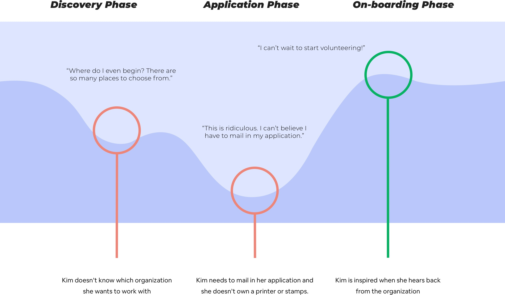Once I had really gotten a feel for the pain that Kim was experiencing during this process, I began to break out the individual tasks and user stories Kim would want to accomplish during her journey. After developing out a few dozen user stories, three major themes revealed themselves as epics.
Discover
“As a volunteer, I want to be connected with an organization, so that I can spend less time looking.”
Apply
“As a volunteer, I want to manage my applications, so that I can see where I'm at in the application process.”
Connect
“As a volunteer, see where my friends are volunteering, so that I can join them.”
Now that I had clear direction on the important tasks to Kim, I need to focus in on a single task to explore. The best way to figure out how Kim would move through this task was to develop out a task flow.
Discover Organization Task Flow
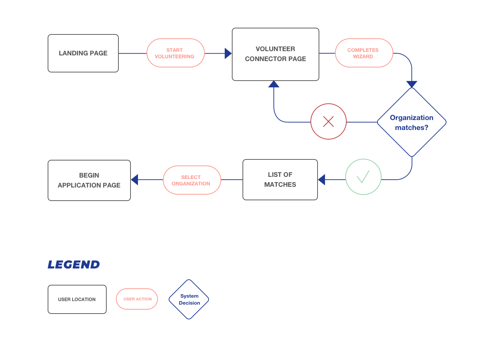Design Exploration
Now that I was confident in my problem space, persona and chosen epics I wanted to start validating potential solutions. To do this, I started to explore simple concepts through pen & paper sketching and lo-fi wireframes.
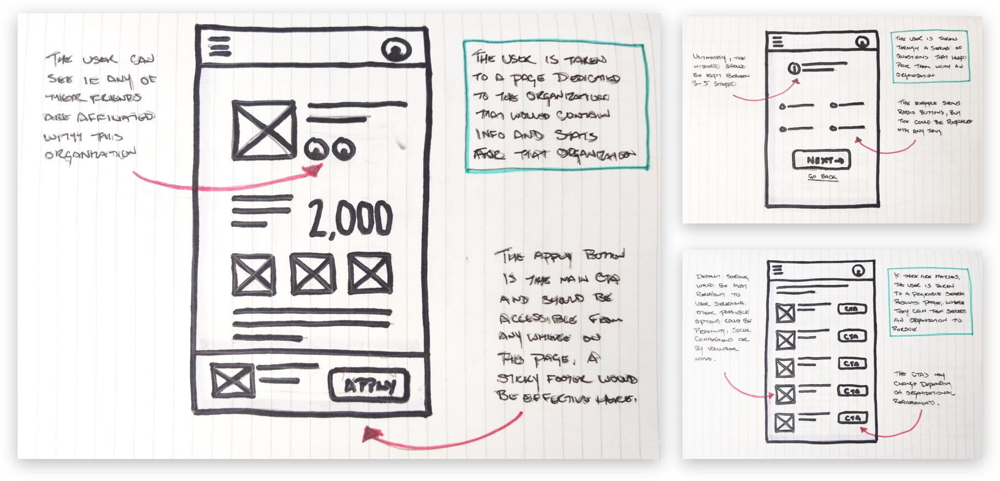The fastest way to get ideas out was for me to sketch them out on paper. This allowed me to validate concepts easily and quickly. However, I felt that paper could only take me so far in validation. To take my sketches further, and develop out a functional prototype, I began to build out lo-fi wireframes.
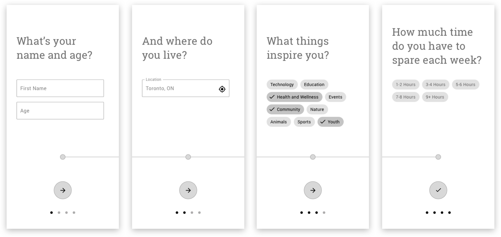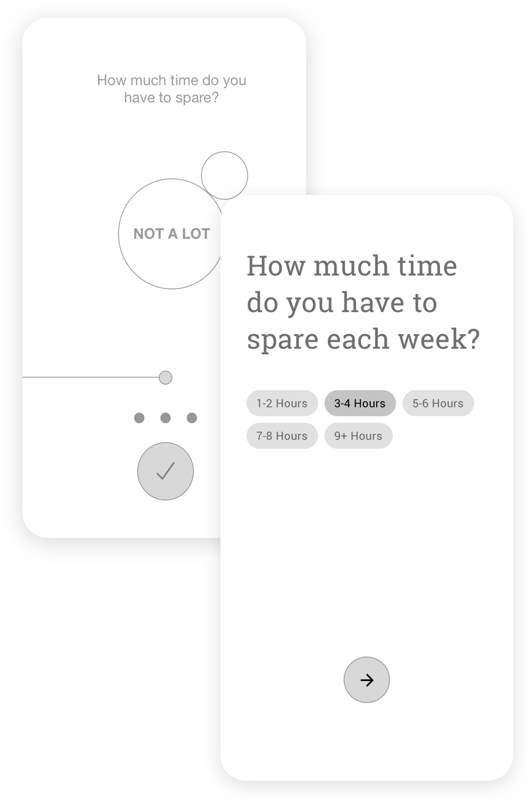Don't Reinvent The Wheel
While building out my wireframes, I started experimenting with ways users could select how much time they had available to volunteer and I felt that this was a really great opportunity to do some interesting things with a touch interface and some sort of dial pattern. I tried out some ideas and put them in front of users to test and not a single person understood what was happening and what they were expected to do.
I took this feedback very seriously, decided to scrap the idea and implement a pattern that users would be more familiar with - Material design chips.
Iterate. Iterate. Iterate.
With a clear path ahead of me, I began iterating on my wires, testing, and iterating again. Eventually, I got to a point where I felt that testing my iterations was producing no new information, so from there, I began to start exploring where I wanted to take this visually.
Visual Identity
I started focusing on choosing a name for my app. I chose a word that came up several times during my user interviews - users felt it was their duty to start volunteering, a feeling of giving back that they couldn’t really describe, but knew it was something they had to do. It was their calling.
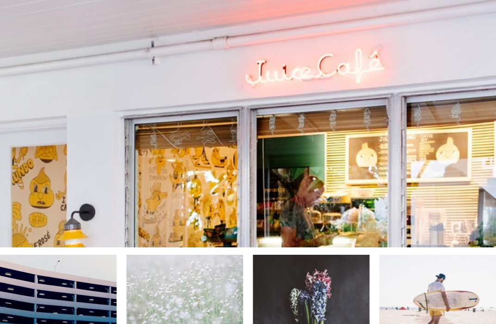Calling is an interesting word to work with. Without question, it sounds like a telephone app, so I needed to be very careful about where I took the visual identity. Despite this, I started playing around with the double L’s, looping them, overlaying them, twisting them to the point where it actually just looked like a literal phone cord. Not good. However, I started to see another shape emerge - a heart.
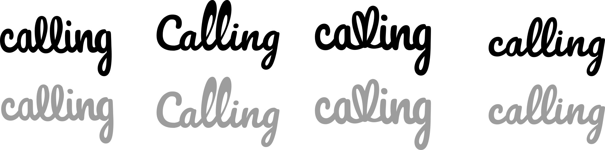I had some concerns with using a heart as imagery - it definitely gives off dating app vibes, but felt that I could manage this through color and application which I would validate through moodboard exploration.
Ultimately, my moodboard communicated a feeling of stillness, warmth and full beach vibes. The colors I extracted from my moodboards debunked my ‘dating app’ concerns, and I was confident that the heart imagery would be fine.
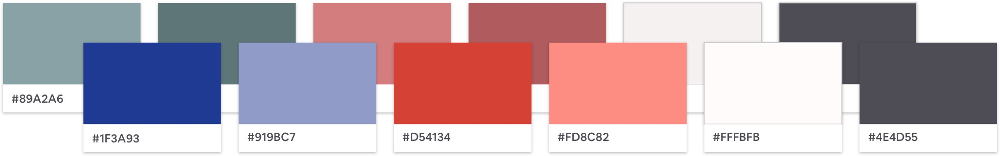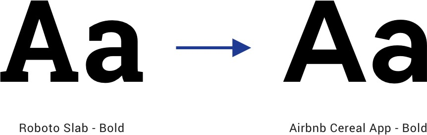My color exploration went through many phases. The first draft of my colors were muted, subtle and, to be honest, incredibly dull. Through several rounds of experimentation, iteration and adjustments, I landed on a palette that was both accessible and dynamic, but not too much of a divergence from my original moodboard.
With my new colors in place, my original typeface selection started to feel dated. I decided to move to something that felt much more current, and that kept up with the energy of my new color palette.
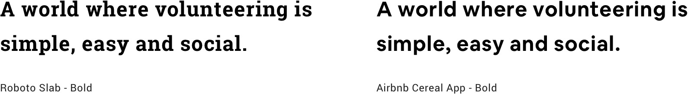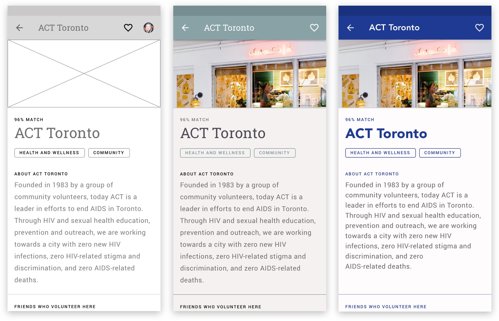Next Steps
Although far from complete, Calling is in a good state overall. The current prototype communicates an idea, a flow and solid design thinking, while the visual identity communicates a understanding of branding, color and design. When thinking about about how Calling could scale, I consider two very different futures.
Best & Worst Case
Many organizations would not exist if not for their volunteers. A massive influx of volunteers would mean organizations would see a huge spike in their efforts and how they operate. This influx could inspire global change for the good, and it could refocus how humans feel about community and the world around them.
On the other hand, there is no question that volunteering is a very privileged thing to do - it takes time and energy to do. It is not something that someone who works 2 (or more) jobs would typically be able to include in their day to day. In addition to this, volunteering also can bring out an elitist mentality in some. Are we talking potential class war? Maybe. Could this potentially have the opposite effect and actually turn people off of volunteering? Maybe.
So, what next?
I believe the immediate next steps would be to focus more on the application process. Each organization has different processes in place, and it’s important to make sure that Calling can accommodate these variations. I also strongly feel that the core interactions will actually happen on desktop, with the mobile app being much more of a companion, and not actually facilitate the core interactions.
In addition to this, all my research is on the experience of the volunteer. Moving forward, I would need to conduct a very different set of research to find out exactly what the needs are from the perspective of an organization and apply those findings.
— See the Prototype